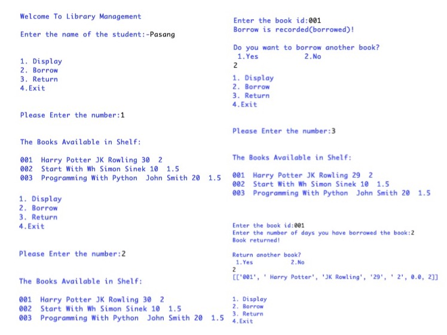
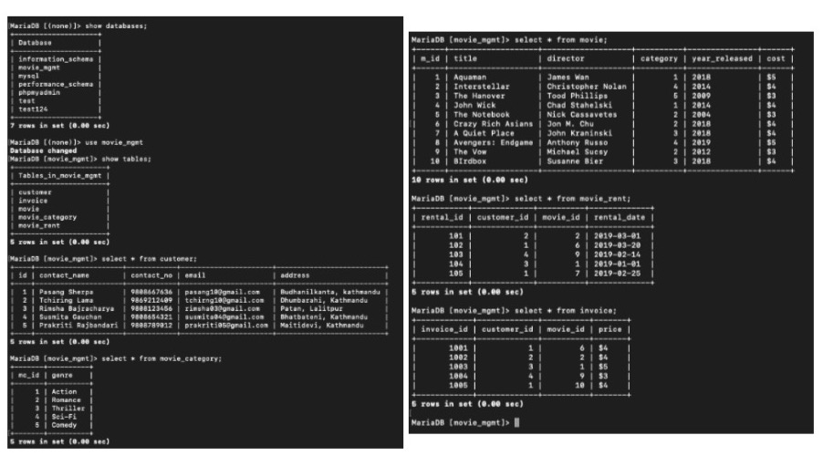
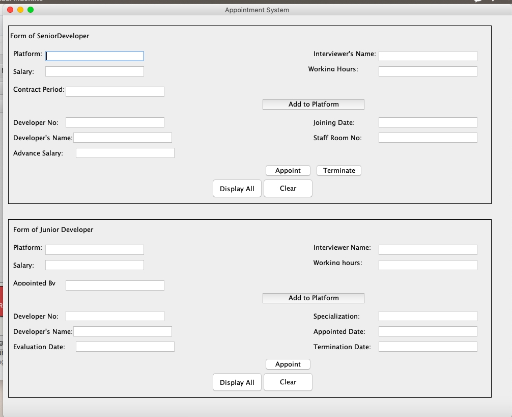

Home
About Me
My Work
Blog
Research
Contact
MY WORK
1

Caption: Library Management System using Python
2

Caption: Database using Xampp
3

Caption: Appointment System using Blue J
4
Caption: Creating Website using HTML, CSS, JS
5
Caption: Creating Website using HTML, CSS, JS
❮
❯